Every diagram in this guide also exists as an interactive web page you can open in any browser — search, zoom and trace relationships are built in. The files live next to this guide in docs/guides.
1. The Big Picture — what StuHub is
StuHub is a study assistant that lives in your browser. It reads your course files, takes notes from them, quizzes you, and helps you remember — a bit like a tireless private tutor who has read everything you own.
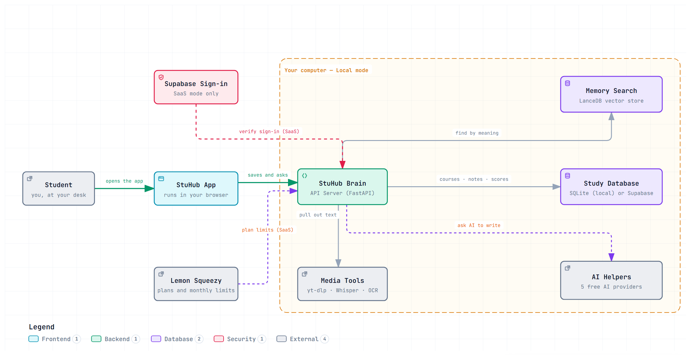
Everything you click travels from your screen, through StuHub's brain, to your saved study data.
Words in the diagram
Student
You. The only part of the picture that needs coffee. Like the driver of a car — everything else is the car.
StuHub App (frontend)
The screens you see and click in your browser. It only shows things and passes your clicks along — like a shop counter, not the kitchen behind it.
StuHub Brain (API Server, FastAPI)
The middle layer that does the real work: it receives your requests, decides what to do, and answers. Like a restaurant's head waiter who takes your order to the kitchen and brings back the food.
Study Database (SQLite / Supabase)
The filing cabinet where your courses, notes and scores are kept. In local mode it is a single file on your computer.
Memory Search (LanceDB vector store)
A special search that finds text by meaning, not just exact words. Ask "what causes rain?" and it finds the paragraph about precipitation, even if the word "rain" never appears.
AI Helpers (5 free AI providers, fallback chain)
Outside writing services StuHub borrows. If one is busy, the next one steps in automatically — like calling friends one by one until someone picks up.
Media Tools (yt-dlp · Whisper · OCR)
Specialists for non-text files: they download videos, turn speech into text, and read text out of pictures.
Supabase Sign-in / Lemon Squeezy
Only used in the online (SaaS) mode: one checks who you are when signing in; the other handles paid plans and monthly limits. In local mode neither is needed.
Local mode vs SaaS mode
Local: everything stays on your computer, no account. SaaS: sign-in and plan limits, hosted online.
Real life Think of StuHub as a librarian (the Brain) with a photographic memory (Memory Search), a small team of ghost-writers (AI Helpers), and a scanner for tapes and photos (Media Tools). Your notes and scores are kept in the library's own card catalog (the Study Database), and in local mode the whole library sits in your bedroom.
2. Setting Up Your Semester
Before anything smart can happen, StuHub needs to know what you are studying. This is the five-minute setup you do once per term.
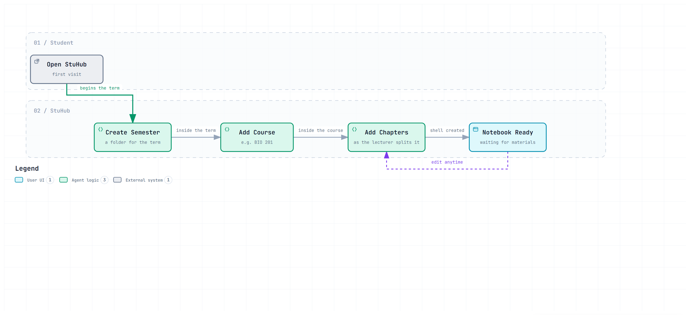
One semester holds courses; each course holds chapters; each chapter holds your materials.
Words in the diagram
Semester
The big folder for a school term. Like "Fall 2026" written on the front of a binder.
Course
A subject inside the semester — one binder tab. You give it a name and (optionally) a color.
Chapter
A topic inside the course, mirroring your textbook's chapters. Notes, quizzes and flashcards are organized per chapter.
Material
Any file you attach to a chapter: a PDF of the book, lecture slides, a recorded lecture, a photo of the whiteboard.
Upload
Copying a file from your computer into StuHub's folder for that chapter. The original file never changes.
Course page
The dashboard for one course where everything you create — notes, quizzes, cards — appears.
Real life It is exactly like organizing a physical binder before the term starts: one binder (semester), a tab per subject (course), and inside each tab the handouts and slides for each topic (chapter + materials). Students who spend ten minutes organizing the binder in September find everything instantly in June.
3. Turning Materials into Searchable Knowledge
When you drop a file in, StuHub does not just store it — it reads it, cuts it into small pieces, and builds a meaning-based index so every later feature can find and quote the right sentences.
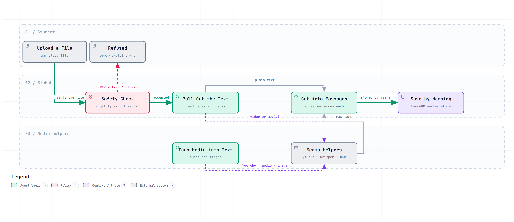
From raw file to searchable, quotable passages.
Words in the diagram
Safety Check
A bouncer at the door: right file type? not empty? not too huge? Bad files are politely refused with an explanation and wiped away.
Pull Out the Text
Reading the raw text out of PDFs, slide decks and documents — like extracting the ink from a printed page.
Turn Media into Text
Videos and recordings get subtitles written (speech-to-text); images get their words read (OCR, "optical character recognition"). A lecture recording becomes a transcript you could also read on a train.
Cut into Passages
The text is split into small chunks a few sentences long. Like cutting a long tape into labeled clips, so a quote can point at one exact moment.
Save by Meaning (vector store)
Each passage is saved together with a numerical "meaning fingerprint", so searching can match ideas, not just keywords.
LanceDB
The specific database product that stores these fingerprints — the library shelf designed for meaning-lookup.
Material Ready
The file is now citable (it can be quoted with its location), searchable, and quotable by every other feature.
Real life Imagine hiring an assistant for one evening: she reads every page, types up your audio lectures, scans your photos of notes, then cuts everything into numbered index cards and files them by topic — not alphabetically, but by what they are about. Ask her about "why plants lean toward light" and she hands you the three exact cards, each with the page number written on the back.
4. Writing Cited Notes from Your Materials
One click on a chapter, and StuHub writes a full study note — but unlike a random chatbot, every claim comes with a quote from your own material.
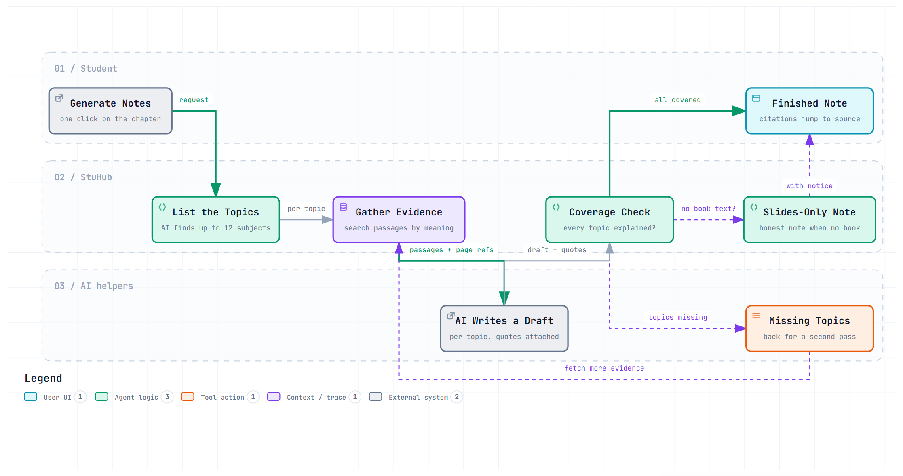
From one click to a finished note with clickable sources.
Words in the diagram
List the Topics
The AI first skims and lists up to 12 subjects the chapter covers — a table of contents before writing.
Gather Evidence
For each topic, the Memory Search pulls the exact passages that discuss it.
AI Writes a Draft
Per topic, a draft is written using only those passages, quotes attached.
Coverage Check
A quality gate: did every topic actually get explained? Missing ones are sent back for a second pass (up to 3 rounds). Like an editor returning a chapter to the writer: "you skipped section 4.2."
Slides-Only Note
If the book text is missing and only slides exist, the note says honestly "written from slides" — no pretending.
Citation
A small chip under a claim showing which file and page (or which minute of a video) it came from. Click it to see the original passage.
Real life Compare two classmates writing lecture summaries. One writes from memory — impressive but occasionally wrong. The other writes each sentence and staples a photocopy of the textbook line it came from. StuHub is the second classmate: slower to trust, but you can check every sentence, which makes revising stress-free.
5. Asking a Question About Your Material
The chat window ("Ask the Material") answers questions using your own files as the source of truth — and shows its receipts.
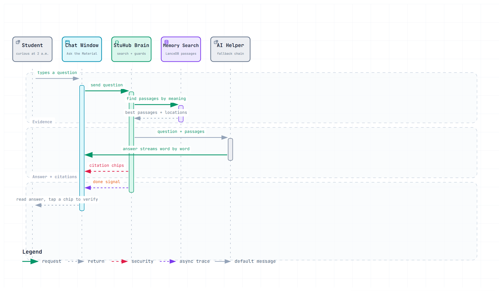
Question in, evidence found, answer streamed back with citation chips.
Words in the diagram
Chat Window
The screen where you type questions, like a messaging app.
Find passages by meaning
Before writing anything, the Brain asks Memory Search for the passages that actually answer your question.
Guard rails
Rules that stop the AI from inventing: it may only write from the found passages.
Streaming
The answer appears word by word, like a friend typing, instead of a frozen 20-second wait.
Citation chips
The small source tags under the answer. Tap one and StuHub shows the exact quoted text from your file.
Done signal
A tidy "finished" event so the screen knows the answer is complete.
Real life Ask a well-read friend "what did the textbook say about inflation?" A good friend says "wait, let me find the page" (retrieval), answers only from the page (guard rails), and shows you the paragraph when done (citation chips). A bad friend — most chatbots — answers confidently from general memory and may mix in things your course never said.
6. Making a Chapter Quiz
Practice quizzes are generated from your own cited notes — never from random internet content — and go through a fairness check before you see them.
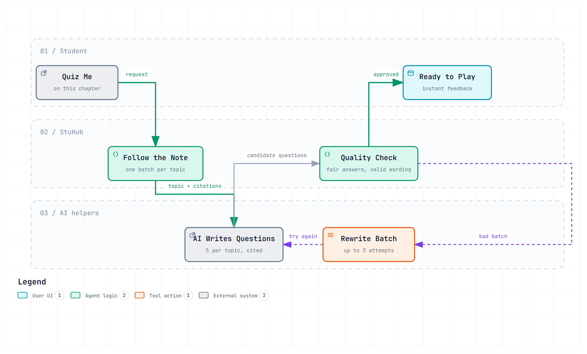
Each topic in your note becomes five fair multiple-choice questions.
Words in the diagram
Follow the Note
The quiz builder splits your chapter note into topic batches so every topic gets questions.
AI Writes Questions (5 per topic, cited)
Questions come with the note citation they were built from — the "answer key" is your own material.
Quality Check
Automated review: is exactly one answer correct? Are wrong options plausible? Are correct letters spread across A–D so nobody can game patterns? Bad batches are rewritten, up to 3 attempts.
Ready to Play
The quiz screen with instant feedback: answer, and you immediately see right/wrong with an explanation.
Instant feedback
Explanations were written when the quiz was made — a wrong answer is a mini-lesson, not just a red cross.
Real life Like a teacher who writes quiz questions only from the assigned reading, then hands the draft to a strict colleague who checks: "Is question 3 unfair? Is the correct answer always C? Fix it before the students see it." You only ever see the cleaned-up version.
7. Taking the Big Exam Quiz
Exam Mode rehearses a whole course at once: 55 mixed questions in one sitting, marked to a 100-point scale.
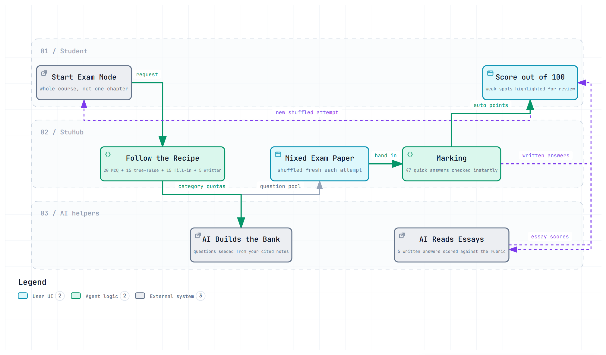
Twenty multiple choice, fifteen true-false, fifteen fill-in, five written — a full dress rehearsal.
Words in the diagram
The Recipe
The fixed question mix: 20 multiple choice + 15 true/false + 15 fill-in + 5 written. Like a real exam blueprint announced in advance.
Question Bank
The pool of AI-written questions for the course, seeded from your cited notes.
Mixed Exam Paper (shuffled)
Each attempt assembles a fresh random selection — so every rehearsal feels new.
Marking (auto)
The 47 short answers are checked instantly by the computer, like a scanner grading a bubble sheet.
AI Reads Essays
The 5 written answers are read by an AI against a rubric (a scoring guide listing what a good answer must contain) — 10 points each.
Score out of 100
Quick-answer points + essay points, with weak spots highlighted so you know what to revise.
New shuffled attempt
Retake with a different shuffle of the same bank — memory works harder each time.
Real life It is a mock exam with a fair examiner: the objective parts are machine-marked in seconds (no waiting a week), and the essays are read with the same rubric every time — no "the examiner had a bad morning" effect. And because each mock is shuffled from the same bank, retaking is like practicing penalty kicks with the goalkeeper diving a different way.
8. Life of a Flashcard (Spaced Repetition)
Flashcards are not random — each card follows a schedule that shows up exactly when you are about to forget it.
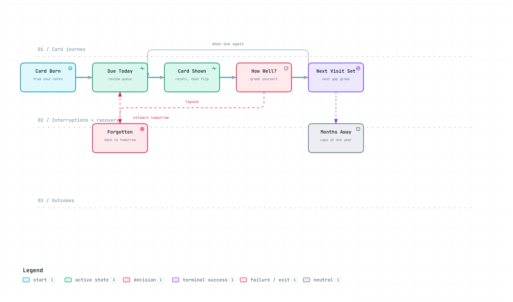
How a card is born, shown, judged and given its next appointment.
Words in the diagram
Card Born (cited)
A card is created from your notes or quiz mistakes, carrying its source citation.
Due Today
The daily queue of cards whose "next visit" is today.
Card Shown / flip
You see the front, recall the answer in your head, then flip to check.
How Well? (Again / Hard / Good / Easy)
Your honest self-grade. "Again" means forgotten; the other three mean remembered with more or less effort.
Next Visit Set / the gap grows
Remembered well → the next gap multiplies: about 1 day, then 6 days, then longer. Like watering a plant exactly when the soil starts drying — not on a rigid calendar, and not after it wilted.
Forgotten → back to tomorrow
Lapsed cards restart at a one-day gap, with no shame attached. Your "ease" for the card drops a little but never below 1.3, so one bad day cannot doom a card forever.
Months Away
After a long streak of success, the gap stretches toward the cap (one year) — the card practically reviews itself.
SM-2 (spaced repetition)
The name of this classic scheduling method — the same idea popular Anki decks use.
Real life Learning vocabulary is the classic case: look at "bilirubin" ten times today and you forget it by Friday. See it once today, once in six days, once in three weeks — right when it starts slipping — and it sticks for months. StuHub does that date-math for every card, every day.
9. Keeping the Study Streak Alive
The streak counts consecutive productive days. It is deliberately kind: built to rescue bad days, not to punish you.
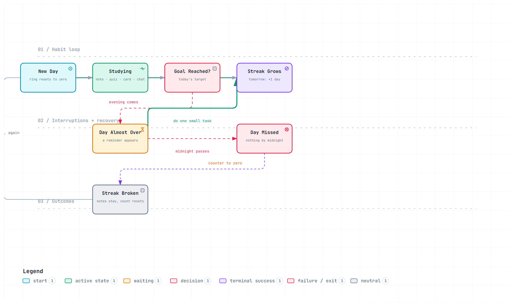
Every note, quiz answer, flashcard review or chat question adds one tick to today's ring.
Words in the diagram
New Day / the ring
At midnight the progress ring resets to zero. The ring fills as you log activities toward your daily goal.
Studying (any counts)
Writing a note, answering a quiz, reviewing flashcards, asking a chat question — all feed the ring. Five small sips fill the same glass as one big gulp.
Goal Reached?
Did today hit your personal target (say, 5 activities)? You choose the target.
Streak Grows
Hit the goal and tomorrow the chain is one link longer.
Day Almost Over → do one small task
In the evening with an empty ring, a gentle reminder appears. One honest flashcard review is enough to save the day.
Midnight passes → Day Missed → Streak Broken
Truly missing a day resets the counter to zero — but nothing else is deleted. Every note, score and card stays exactly as it was.
Real life It works like a gym wall-calendar of X marks: the mark is the reward, a missed day leaves a gap, but the trainer never takes away what you already lifted. And the "evening nudge" is the friend texting "quick 5-minute session?" — often that tiny session is all the day needed.
10. Building the Study Guide and Concept Map
Before an exam you need one page, not twenty tabs. StuHub distills your course into a guide, then draws a map of how the ideas connect.
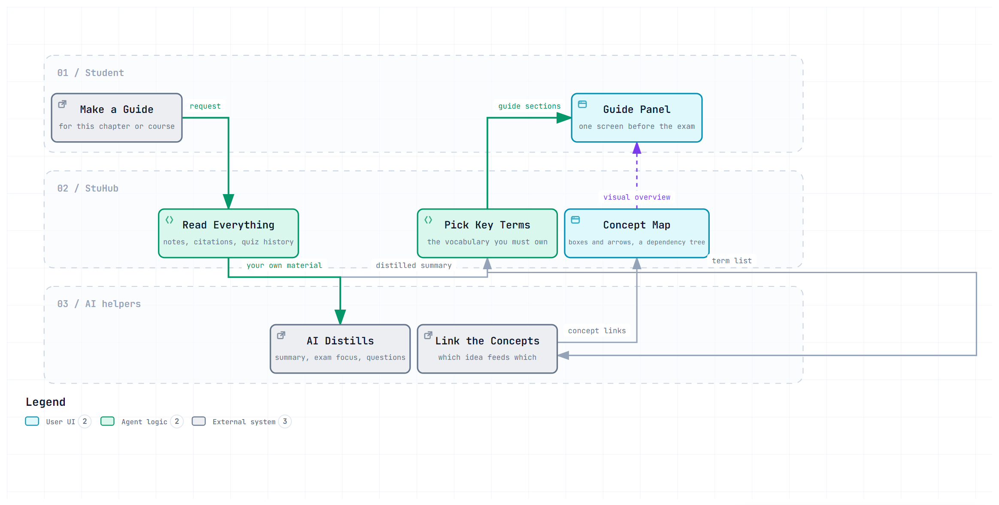
One chapter becomes a one-page summary, key terms and exam focus points — plus a concept map.
Words in the diagram
Read Everything
The builder gathers your notes, their citations and your quiz history for the chapter.
AI Distills
That collection is compressed into a summary, exam focus points and likely questions — from your material, not a generic list.
Key Terms
The vocabulary you must own for this chapter, each with its grounded definition.
Link the Concepts / Concept Map
Boxes (terms) and arrows (which idea feeds which) drawn as a dependency tree. Arrows mean "understand this before that". Like a recipe: you must chop before you sauté; the map shows which steps depend on which.
Guide Panel
The one screen you open the night before the exam.
Real life Two students revise for a biology final. One rereads 60 pages in a panic. The other holds one page: five key terms, three focus points, and a map showing "cell respiration ← glucose ← photosynthesis" — study the roots of the tree first and the branches make sense. StuHub builds that second student's page automatically, from the student's own notes.
11. Getting Homework Graded
Paste an essay draft before the deadline and StuHub grades it against your course material — with every criticism quoted, and suggestions you remain in control of.
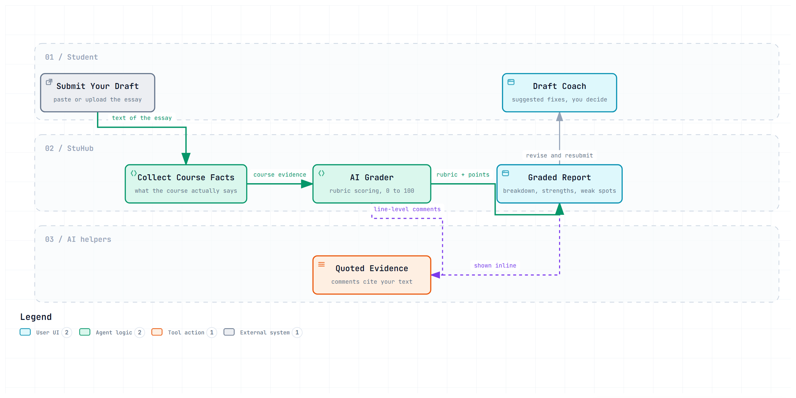
An essay is scored 0–100 against a rubric derived from your course material.
Words in the diagram
Submit Your Draft
Paste the text or upload the file — nothing is sent to your teacher; this is private practice.
Collect Course Facts
The grader first pulls what the course actually says, so your essay is judged against your material.
Rubric (0–100)
A scoring guide splitting points across criteria — accuracy, structure, use of evidence. The score is a breakdown, not a mystery number.
Quoted Evidence
Every deducted point quotes the exact sentence that caused it, so you can disagree and check the source yourself.
Draft Coach
Suggested fixes you decide to accept or ignore. The coach proposes; the student disposes.
Real life A good writing tutor never just says "72". She says: "72 — here is where your argument about the causes wobbled (quoting your paragraph 3), and here the evidence you cite doesn't match the claim (quoting it)." And she does this before the deadline, while you can still fix it — that is the whole point of practicing with a coach instead of only receiving a final judgment.
12. Exporting and Backing Up Your Work
Your study life belongs to you. Everything can leave StuHub in standard formats, and a whole semester can travel between computers as one zip file.
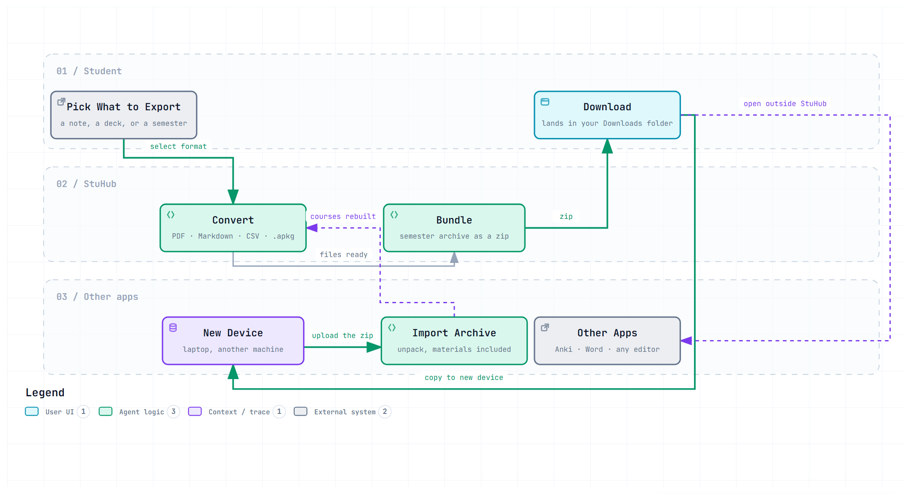
Notes, cards and whole semesters can leave StuHub in formats other apps understand.
Words in the diagram
Pick What to Export
A single note, a flashcard deck, or an entire semester.
Convert
Notes become PDF or Markdown (plain text that any app opens); flashcards become an .apkg deck — the format the popular free app Anki opens directly. No dead, proprietary formats.
Bundle (the zip suitcase)
A semester archive packs courses, notes and material files into one file. Like packing a whole semester of binders into one labeled suitcase.
Import Archive
On a new computer, upload the zip and everything is rebuilt — courses, notes, even the material files. Switching computers becomes a copy-paste.
Local by design
In local mode, nothing leaves your machine unless you explicitly export it. The archive is your own backup — keep a copy in cloud storage if you like.
Real life Graduating or switching laptops should never mean losing four years of notes. It is the difference between books locked in an old library's basement (no lock-in) and books you own and can box up, carry, and shelve in a new home. The zip suitcase even keeps the original textbooks (materials) in the boxes.